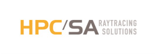

Type de mission :
Cette mission était un stage en tant que User Experience designer, et a duré 5 mois. HPC SA (aujourd’hui rachetée par Graitec), est l’éditeur du logiciel ArchiWIZARD. L’objectif de cette mission était de conseiller HPC SA, et s’est concentré sur la partie analyse de l’activité des utilisateurs et la conception d’une nouvelle version du logiciel.
Contexte :
ArchiWIZARD est un logiciel permettant de visualiser / créer / modifier des modèles 3D des bâtiments. Le logiciel calcule alors les pertes de chaleur, la conformité aux réglementations thermiques en vigueur, et de nombreux autres informations nécessaires pour valider un projet architectural.
Les utilisateurs ont des profils bien différents : architectes, bureaux d’études, constructeurs de maisons individuelles, économistes, enseignants en école d’architecture. Cependant, HPC SA ne connaissait pas assez les usages, parfois très différents les uns par rapport aux autres, liés à chacun de ces métiers, ainsi que leurs besoins respectifs.
Le logiciel existait déjà avant mon intervention, et la version suivante n’avait pas été amorcée.
Équipe et mon rôle :
J’étais intégré à l’équipe de développement, composée d’une dizaine de personnes. Mon rôle était cependant en autonomie, car j’apportais une connaissance qu’aucun membre de l’équipe n’avait. Cette mission était néanmoins supervisée par le chef de projet ArchiWIZARD, Clément Viguier.
Démarche :
-
Analyse de l'utilisateur :
Dans un premier temps, je me suis intéressé à connaître les utilisateurs. Qui sont ils ? Pourquoi ont ils besoin d'un logiciel comme ArchiWIZARD ? Comment se déroule un projet architectural, et qui sont les parties prenantes ?
Mes recherches démographiques et métier, ainsi que les différentes interviews que j'ai menées m'ont permis d'établir des profils types d'utilisateurs, sous forme de personas.
-
Analyse de l'utilisabilité de la version existante :
De nombreux professionnels utilisaient déjà ArchiWIZARD. J'ai pu aller à la rencontre de certains d'entre eux, ainsi que des étudiants en école d'architecture. J'ai alors procédé par observation, pour détecter les points sur lesquels les utilisateurs se perdent ou se sentent confus, et les points qu'ils apprécient.
J'ai également mené une évaluation heuristique pour identifier les axes à améliorer, basée sur des principes ergonomiques.
-
Analyse des besoins :
A partir des profils types d'utilisateurs, j'ai pu rédiger des scénarios de travail liés à leur activité, que j'ai illustrés avec des modèles de données du domaine architectural. Les points forts et faibles de chaque scénario m'ont servi de base pour établir une liste des besoins.
-
Conception d'une nouvelle version :
Au vu de la variété d'utilisations possibles du logiciel, j'ai choisi d'explorer de nombreux choix de design. J'ai rédigé des scénarios d'utilisation pour chaque écran, que j'ai déroulés auprès de membres de l'équipe du projet sous forme de Design Walkthrough, en expliquant chaque choix de design.
Le prototype papier que j'ai créé était dynamique, composés de plusieurs couches de papier, pour s'adapter aux différentes options. J'ai pu itérer 3 fois sur ce prototype, grâce aux retours des membres du projet et grâce à une phase de Design Rationale, où j'ai pu justifier certains choix selon des critères bien définis.
Résultats :
Je suis ravi d'avoir pu pleinement mettre en oeuvre mes compétences d'UX designer dans un contexte où ce rôle était nécessaire et où personne dans l'équipe n'avait cette compétence. J'ai eu un véritable rôle de conseiller, et j'ai pu organiser cette mission en totale autonomie. Les utilisateurs types ont pu être identifiés et détaillés, pour que chaque membre de l'équipe sache pour qui est destiné le logiciel. La conception d'une nouvelle version a permis d'amorcer de nombreux axes d'amélioration, et de justifier ces choix par des critères et des évaluations. La phase d'analyse m'a permis d'aller au contact des utilisateurs finaux et d'analyser leurs besoins réels. Cependant, je regrette de ne pas avoir pu confronter le prototype à des vrais utilisateurs, et de ne pas avoir créé un second prototype, de plus haute fidélité graphique.